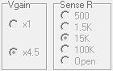

|  |
Vgain and Sense R
are indicators for the gain toggle switch and the resistance rotary
switch on the Mini_CT interface. They are updated each time Run Sweep, Avg8, or Read Voltages is clicked. If Live is checked, Run Sweep
will occur at the set Rate interval updating the values. During periods of inactivity, a
background timer checks for switch changes and the switch settings are
updated every 0.5s. This background update can be turned off via Diagnostics. The program uses the switch position information to calibrate the incoming data stream. Main |